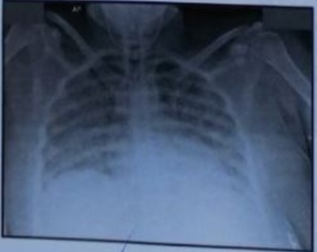

No Calendário Vacinal Nacional de 2020, do Ministério da Saúde, relativo à febre amarela, consta:
No Brasil temos áreas endêmicas de febre amarela. Doença que quando evolui de forma grave apresenta alto índice de mortalidade. Temos árduo trabalho para o controle da doença em nosso país. Assinale a alternativa correta em relação às suas caracteristicas
Homem, 22 anos, procura pronto atendimento por quadro de febre, náuseas e dores pelo corpo há cinco dias. Referia viagem recente ao interior de São Paulo para realização de trilhas e visitas a cachoeiras. Exame físico: corado, hidratado, ictérico +++/4, febril 38,5° C, FC = 72 bpm, PA = 110 x 70 mmHg e FR = 20 ipm. A primeira hipótese diagnóstica a ser considerada, com base nos dados clínicos e epidemiológicos, é a
Qual é o período de incubação da febre amarela?
Criança, sexo masculino, oito anos de idade, residente em região de mata no interior de Minas Gerais, consulta na UPA com história de febre (39,5ºC), cefaleia e mialgia há seis dias. Relata que no terceiro dia iniciou com exantema maculopapular, sem prurido. As lesões iniciaram nos tornozelos, punhos e antebraços, e se espalharam para as palmas das mãos e plantas dos pés, e depois braços, pernas e tronco, poupando a face. Notam-se também petéquias e algumas áreas de equimose nas extremidades. Encontra-se prostrado, com edema peripalpebral e hiperemia conjuntival. Abdome normotenso, indolor, com fígado palpável a 2cm abaixo do rebordo costal direito e baço a 1cm do rebordo costal esquerdo. Restante do exame físico sem alterações. As vacinas estão em dia. Exames laboratoriais: Hemácias: 4,69 milhões/mm³ (VR: 4,0-5,2 milhões/mm³); Hemoglobina: 11,1g/dL (VR: 11,5 - 15,5g/dL); Hematócrito: 40% (VR: 35-45%); Global de leucócitos: 14.180/mm³ (VR: 4.500-13.500/mm³); Diferencial: 65% segmentados; 30% linfócitos; 2% monócitos; e 2% bastonetes. Plaquetas: 61.000/mm³ (VR: 150.000 a 450.000/mm³); Proteína C reativa: 35mg/dL (VR <6 mg/dL); Dosagem de sódio sérico: 131mmol/L (VR: 135-145 mmol/L); TGO: 110U/L (VR: 5-40U/L); TGP: 55U/L (VR: 7-56 U/L); Assinale a hipótese diagnóstica MAIS PROVÁVEL.
De acordo com o Guia de Vigilância em Saúde (2019), paciente com quadro febril (acima de 38ºC), mialgia, cefaleia, sinais e sintomas de insu ciência respiratória aguda, de etiologia não determinada, na primeira semana da doença, ou paciente com enfermidade aguda, apresentando quadro de insu ciência respiratória aguda, com evolução para óbito na primeira semana da doença. Esses são critérios estabelecidos para a definição de caso suspeito de
""Ao menos 38 macacos morreram por febre amarela de julho de 2019 a 8 de janeiro deste ano e mais de 1 mil mortes suspeitas de primatas foram investigadas, de acordo com um boletim epidemiológico divulgado nesta quarta-feira (15) pelo Ministério da Saúde."" (PORTAL G1, 15 de janeiro de 2020). A respeito da febre amarela, é CORRETO afirmar:
Assinale a alternativa que contém uma condição favorável para o aparecimento de surtos de febre amarela em uma região:
Durante atendimento em Unidade Básica de Saúde, foram admitidas três pessoas, as quais procuraram o serviço de saúde para receber a vacina contra a febre amarela. A primeira era uma gestante com catorze semanas de gestação, que recebera uma dose da vacina contra a febre amarela em 2007; a segunda era uma idosa de 66 anos de idade, em uso de imunobiológicos para o tratamento de artrite reumatoide; e a terceira era um paciente com diagnóstico de Aids, com exames recentes de carga viral do HIV indetectável e última dosagem de linfócitos T CD4 de 422 células por mm³ (24,6%). A respeito da conduta quanto à realização ou não da vacinação contra a febre amarela nesse caso hipotético, assinale a alternativa correta.
Homem, 42 anos, procedente do interior de São Paulo, procurou o pronto atendimento com história de febre há cinco dias, acompanhada de aparecimento de exantema centrífugo e icterícia há três dias. Evoluiu com torpor e sulfusões hemorrágicas no último dia. Referia pescaria há 10 dias, tendo tido contato com carrapatos. Considerando o exposto, assinale a alternativa correta.
Menino 12a, procura atendimento referindo mal-estar, febre e dor no corpo há 18 horas. Refere ter retirado carrapato da perna há 6 dias. Exame físico; T= 39°C; pulso cheios. Hb = 12,2 g/dL; Leucócitos = 12.300mm³ (3% bastões, 65% segmentados, 25% linfócitos, 7% monócitos); Plaquetas = 345.000 mm³. A CONDUTA É:
Nas formas leves e moderadas os sintomas de febre amarela, duram cerca de dois a quatro dias, e ocorrem em cerca de 20% a 30% dos casos. Sendo inadequado que se considere:
Um paciente do sexo masculino, jovem, procura atendimento médico após retornar de viagem com duração de 2 meses em uma região rural. Informa que, pouco tempo após chegar àquela região, veri cou a presença de uma lesão vermelha na coxa esquerda, que, posteriormente, espalhou-se por outras partes do corpo, mas em menor tamanho e com discreto prurido. No início, ele relacionou a "algum bicho" que o mordeu durante uma cavalgada. As lesões duraram, aproximadamente, três semanas, e a cura foi espontânea. Durante esse período apresentou um quadro clínico de astenia, olhos vermelhos, sonolência, mialgia, febre e artralgia, semelhante a um quadro viral. Após seu retorno da viagem iniciou um quadro de di culdade de concentração e memória, perturbações no sono e, recentemente, di culdade à deambulação. Observa-se, atualmente, durante o exame clínico neurológico, ataxia cerebelar e paralisia do nervo facial, além de dor interescapular intensa. Em relação ao quadro clínico descrito acima, assinale o diagnóstico mais provável:
Paciente residente nos Estados Unidos, viajando a passeio no Espírito Santo, conheceu a região montanhosa de Pedra Azul, e posteriormente dirigiu-se para Conceição da Barra. Cerca de 5 dias após o retorno para casa, evoluiu com febre, mialgia, cefaleia holocraniana, que foram seguidas de rash cutâneo. Realizadas algumas sorologias, mas o diagnóstico assim mesmo cou confuso. O laboratório consegue a rmar que trata-se de infecção por Flavivírus. Com base nesta informação, quais os possíveis diagnósticos etiológicos?
O vírus da febre amarela é um arbovírus protótipo do gênero Flavivirus, da família Flaviviridae. Do ponto de vista etiológico, clínico, imunológico e siopatológico, a doença é a mesma. Reveste-se da maior importância epidemiológica, por sua gravidade clínica e elevado potencial de disseminação em áreas urbanas. Aponte somente o conceito INADEQUADO nas alternativas.
Sobre a Febre Amarela, é correto afirmar:
Os vetores da febre amarela são:
Diante de um caso de paciente com febre de início súbito, mialgia, prostração intensa com exantema maculopapular em regiões palmar e plantar, manifestações hemorrágicas e história de picada de carrapatos, o Ministério da Saúde recomenda a notificação como caso suspeito de:
Mulher, 32 anos, com febre, cefaleia, náuseas, mialgia e tosse seca há 5 dias. Há um dia houve piora da tosse e surgimento de dispneia intensa. Mora na zona rural e nega doenças prévias. Exame físico: MEG, corada e hidratada, acianótica e anictérica. Aparelho respiratório: murmúrio vesicular presente, diminuído em base direita e estertores em base esquerda. FR = 40 ipm, saturação 85 % com máscara de O₂ 10L/min. Aparelho cardiovascular: RCR 2 T, bulhas normofonéticas sem sopros. FC: 120 bpm. PA: 96x40 mmHg. Abdome sem alterações. Membros sem edemas. Exames laboratoriais: Hb = 17 G/dL; Ht = 51 %; GB = 10.800 /mm³ (Bastões 37%; segmentados 51%; eosinó los 1%; linfócitos 11%); Plaquetas = 98.000/mm³. LDH = 520 U/L (VR: 100 a190); Creatinina = 1,2 mg/dL; AST = 70 U/L (VR<38); ALT = 67 U/L (VR<31); Bilirrubina Total = 0,6 mg/dL (VR: 0,8-1,2). Radiografia de tórax, ver figura abaixo: Qual é o diagnóstico mais provável?

Pessoas que viajarão para uma área de risco da febre amarela deverão fazer pro laxia, tomando a vacinada seguinte maneira:
Febre hemorrágica típica com necrose hepática proeminente. Os pacientes são virêmicos por 3 a 4 dias e podem ter icterícia, hemorragia, vômito negro, anúria e delirium. Qual a doença infecciosa mais compatível com esse quadro clínico?
A doença febril aguda de curta duração (no máximo doze dias) e gravidade variável, que se apresenta como infecção subclínica e(ou) leve, ou até uma forma grave e fatal, cujo quadro típico tem evolução bifásica (período de infecção e de intoxicação), com início abrupto, febre alta e pulso lento em relação à temperatura, calafrios, cefaleia intensa, mialgias, prostração, náuseas e vômitos, durante cerca de três dias, após os quais se observa remissão da febre e melhora dos sintomas, o que pode durar algumas horas ou, no máximo, dois dias, sendo que o caso pode evoluir para cura ou para a forma grave (período de intoxicação), caracterizada por aumento da febre, diarreia, reaparecimento de vômitos com aspecto de borra de café, instalação de insu ciência hepática e renal, surgindo também icterícia, manifestações hemorrágicas (hematêmese, melena, epistaxe, hematúria, sangramento vestibular e da cavidade oral, entre outras), oliguria, albuminuria e prostração intensa, além de comprometimento do sensório, que se expressa mediante obnubilação mental e torpor com evolução para coma, é a
A hantavirose se manifesta sob diferentes formas, desde doença febril aguda inespecí ca, até quadros pulmonares e cardiovasculares mais severos e característicos, podendo evoluir para a síndrome da angústia respiratória (SARA). Sendo INADEQUADO o seguinte:
Revisar: possível letra faltando em enunciado
A febre amarela é uma doença infecciosa grave, causada por vírus e transmitida por vetores. Assinale a alternativa INCORRETA:
Escolar, do sexo feminino, com 10 anos de idade, proveniente de zona rural, com história de febre, cefaleia, artralgia e lesão eritematosa, indolor com expansão centrífuga e centro pálido em membro superior direito. Após algumas semanas, evoluiu com meningite linfomonocitária e paralisia facial. Qual é principal hipótese diagnóstica para o caso?
A definição de caso suspeito: “indivíduo procedente, nos últimos 21 dias, de Guiné ou Serra Leoa que apresente febre, podendo ser acompanhada de diarreia, vômitos ou sinais de hemorragia, como: diarreia sanguinolenta, gengivorragia, enterorragia, hemorragias internas, sinais purpúricos e hematúria”, se refere à seguinte doença:
A febre maculosa brasileira é uma doença infecciosa febril aguda, de gravidade variável, cuja apresentação clínica pode variar desde as formas leves e atípicas até formas graves. Qual o agente infeccioso?
Um médico com trinta e dois anos de idade acabou de voltar da Guiné, país acometido por epidemia do vírus ebola, onde trabalhou para a Organização Médicos Sem Fronteiras, tendo chegado ao Brasil há dez dias. Na manhã de hoje, ele acordou com febre alta e resolveu procurar a emergência de um hospital, onde informou que, desde que voltou da África, teve contato com apenas quatro pessoas, entre elas, a sua noiva. A respeito desse caso clínico e de aspectos a ele relacionados, julgue o próximo item. O vírus ebola não se dissemina por meio de objetos contaminados, tais como roupas, agulhas, seringas e instrumentos cirúrgicos.
Um médico com trinta e dois anos de idade acabou de voltar da Guiné, país acometido por epidemia do vírus ebola, onde trabalhou para a Organização Médicos Sem Fronteiras, tendo chegado ao Brasil há dez dias. Na manhã de hoje, ele acordou com febre alta e resolveu procurar a emergência de um hospital, onde informou que, desde que voltou da África, teve contato com apenas quatro pessoas, entre elas, a sua noiva. A respeito desse caso clínico e de aspectos a ele relacionados, julgue o próximo item. Caso o médico seja portador de infecção pelo ebola, não somente os pro ssionais de saúde, mas todos os familiares e amigos que convivam com ele estarão expostos a risco de adoecer, devido ao possível contato com sangue e uidos corporais dele.
Um médico com trinta e dois anos de idade acabou de voltar da Guiné, país acometido por epidemia do vírus ebola, onde trabalhou para a Organização Médicos Sem Fronteiras, tendo chegado ao Brasil há dez dias. Na manhã de hoje, ele acordou com febre alta e resolveu procurar a emergência de um hospital, onde informou que, desde que voltou da África, teve contato com apenas quatro pessoas, entre elas, a sua noiva. A respeito desse caso clínico e de aspectos a ele relacionados, julgue o próximo item. Para definição do diagnóstico, além da febre, deve-se pesquisar a existência de cefaleia, dor muscular, fraqueza, fadiga, diarreia, vômitos, dor abdominal e hemorragia.
Homem, 36 anos, comparece ao pronto atendimento relatando febre, cefaleia, fraqueza, diarreia, vômitos, dor abdominal, inapetência, odinofagia de 3 dias de evolução. Será considerado caso suspeito de Ebola se o paciente retornou:
Um estudante de 23 anos de férias é avaliado no pronto-socorro por quadro de tontura que teve início há 3 dias. Ele relata um rash na perna direita que parecia um alvo há dias atrás, sem outras comorbidades. O exame físico revela bradicardia com 40 bpm e pressão sanguínea de 88/42 mmHg; a saturação de oxigênio está normal. Não há outros comemorativos no exame, a não ser por uma lesão em alvo na sua coxa direita. O ECG apresenta um bloqueio AV de 3º grau. Qual dos exames abaixo tem maior chance de elucidar o diagnóstico?
Paciente masculino, 34 anos, dá entrada na emergência com história de 5 dias de febre alta, cefaleia intensa, mialgia e náuseas. Negava artrite, artralgia ou coriza. No exame físico, chama atenção a hiperemia conjuntival, faringite e um exantema maculopapular com descamação. Não há relato de caso semelhante em sua região. O paciente é missionário e refere viagem para a Guiné há 15 dias. Caso o paciente desenvolva choque associado a fenômenos hemorrágicos, sem quadro respiratório relevante, a etiologia mais provável será:
Qual das seguintes afirmativas está associada à doença de Lyme?
As hepatites se caracterizam por elevações na concentração sérica das aminotransferases. Assinale a alternativa que contém apenas condições nas quais a elevação da aspartato aminotransferase costuma ser maior que a da alanina aminotransferase. Respostas: 1 12 23 34